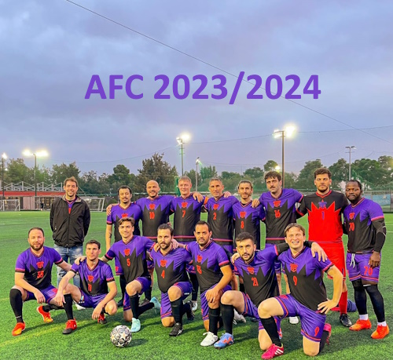

I play Guitar since I was 14 years old, I don't know how to read a music sheet though, everything learned from listenning and repeating
During the lockdown of COVID I bought a Piano and since then I almost didn't touch the Guitar..
I used to play Football from the time I started walking I guess until 17 years old, after that I only play friendly games or in local tournaments
Currently a member of Athens Football Club, I play in the left-back position
